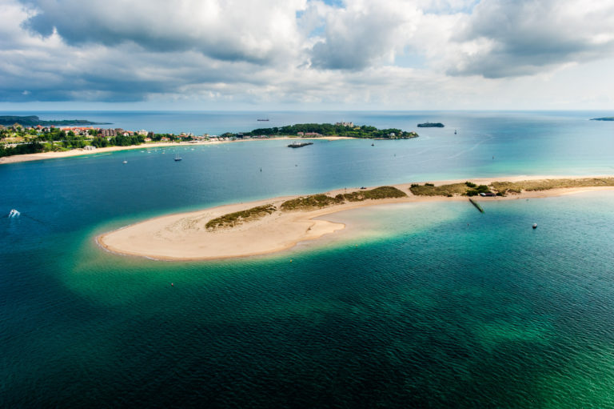
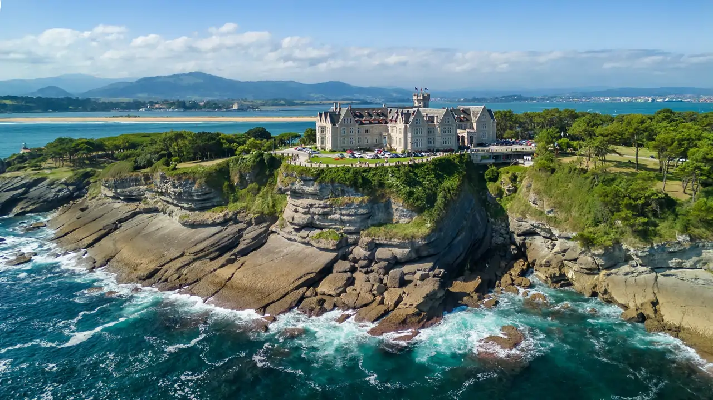
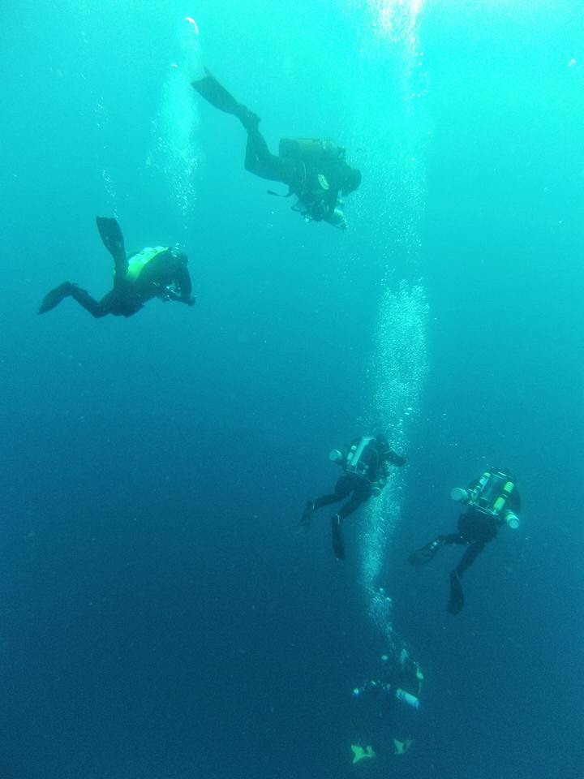

Descubre nuestras inmersiones más populares y sumérgete en esta aventura submarina con nosotros.

Representa el inicio del viaje, la libertad, la aventura y las posibilidades infinitas.

Simboliza el talento, la voluntad y el poder de transformar las ideas en realidad.

Representa la intuición, el conocimiento oculto y el equilibrio entre lo visible y lo invisible.
Representa la intuición, el conocimiento oculto y el equilibrio entre lo visible y lo invisible.
Representa la intuición, el conocimiento oculto y el equilibrio entre lo visible y lo invisible.
Representa la intuición, el conocimiento oculto y el equilibrio entre lo visible y lo invisible.